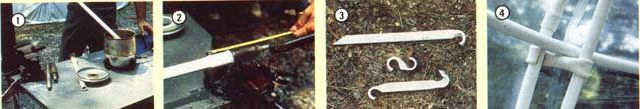

STAFF PHOTOS
[1] Hot vegetable oil makes the plastic pipe pliable enough to . . . [2] stretch over a swage and take a new form. [3] The heating technique can be used to make ground pegs (top) and inter-ring clamps. [4] Both the homemade couplings and the clamps are simple to form and install.